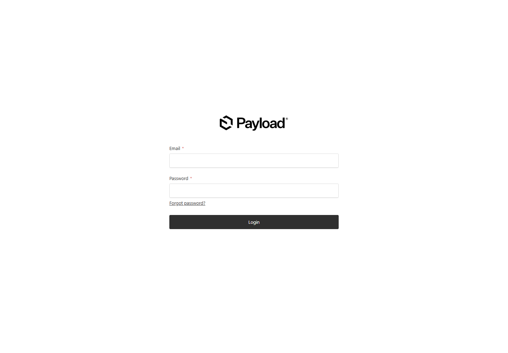
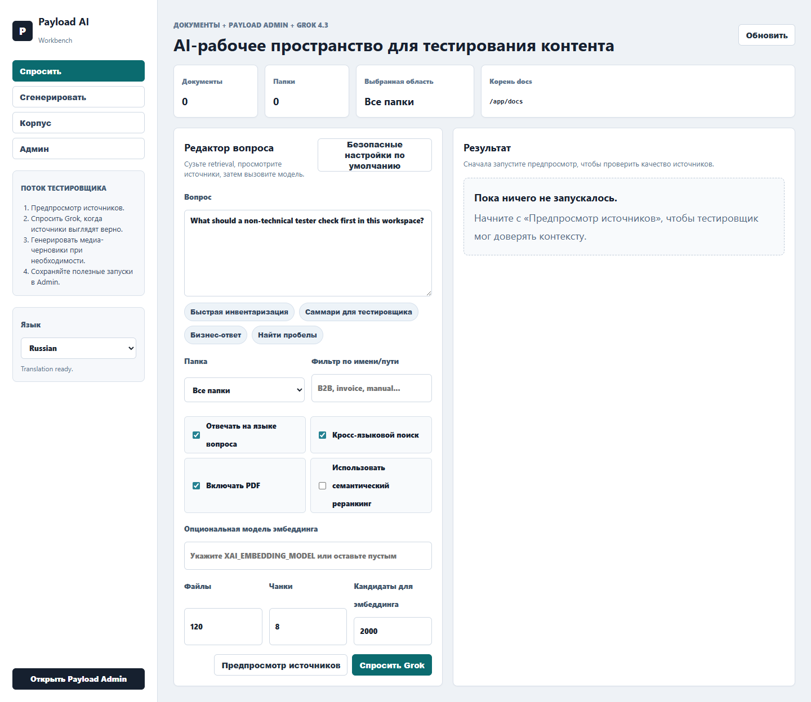
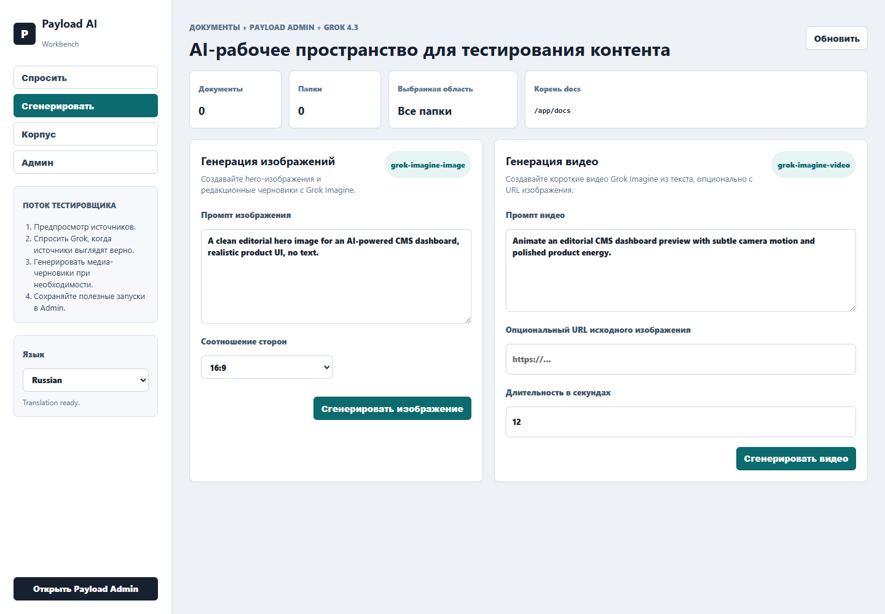
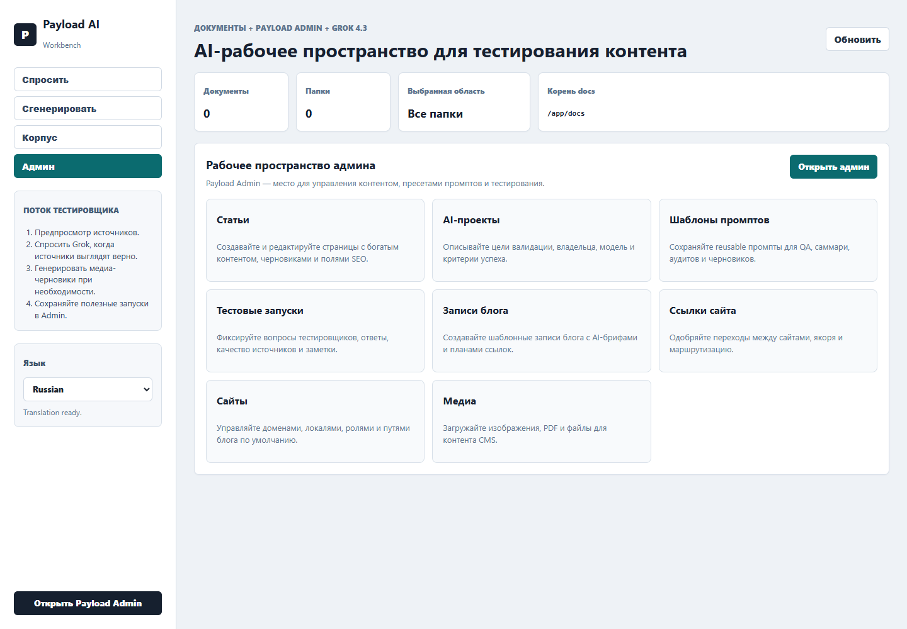

CMS AI: подробный мануал пользователя
Прототип объединяет Payload CMS, кастомную рабочую зону AI, Grok 4.3, генерацию изображений и видео через Grok Imagine, шаблоны блога, сайты и управляемую перелинковку между сайтами.
Прототип объединяет Payload CMS, кастомную рабочую зону AI, Grok 4.3, генерацию изображений и видео через Grok Imagine, шаблоны блога, сайты и управляемую перелинковку между сайтами.
CMS AI создан как максимально действующий прототип для заказчика: редактор может управлять контентом в Payload Admin, тестировщик может задавать вопросы по локальному корпусу документов, а маркетинг может быстро получать черновики изображений и видео для публикаций.
Текстовые ответы работают через модель grok-4.3.
Изображения генерируются через grok-imagine-image,
видео - через grok-imagine-video.
Коллекции Payload покрывают статьи, блог, сайты, шаблоны и линковку.
Прототип развернут на Render free plan в Docker-контейнере.
Основные адреса:
| Раздел | URL | Назначение |
|---|---|---|
| Главная | https://cms-ai.onrender.com | Точка входа проекта. |
| AI Workbench | /ai | Кастомный интерфейс для тестов, поиска и генерации. |
| Payload Admin | /admin | Управление коллекциями CMS. |
dev@payloadcms.com / test. Перед передачей в
production пароль нужно заменить в Render Environment.

Раздел /ai - это кастомный интерфейс, логически продолжающий
админку: слева навигация, поток тестировщика и выбор языка; справа
рабочая область с метриками, редактором вопросов, генерацией и обзором
документов.

| Вкладка | Что делает |
|---|---|
| Ask | Поиск источников и вопрос к Grok по найденному контексту. |
| Generate | Генерация изображений и видео для CMS-контента. |
| Corpus | Просмотр подключенного каталога документов AI_DOCS_DIR. |
| Admin | Быстрые ссылки на ключевые коллекции Payload Admin. |
В левом меню добавлен переключатель языка. Интерфейс поддерживает
пять языков: English, Russian, Ukrainian, Romanian и Polish. Для
языков, отличных от английского, фронтенд отправляет словарь UI-строк
на серверный endpoint /api/translate-ui, а сервер
переводит его через grok-4.3. Ключ xAI остается только на
сервере и не попадает в браузер.
/ai и найдите блок Language в левом меню.
localStorage
браузера, чтобы повторные открытия работали быстрее.

Вкладка Ask предназначена для контролируемого QA по документам. Рекомендуемый порядок: сначала предпросмотр источников, затем вопрос к Grok.
XAI_EMBEDDING_MODEL.
Вкладка Generate работает как media-черновик для редактора: можно подготовить hero-изображение, иллюстрацию для статьи или короткое видео. Результаты возвращаются ссылками и могут быть затем сохранены в Media.

Вкладка Corpus показывает, какие файлы доступны AI слою. Это полезно перед тестом: можно убедиться, что нужные PDF, инструкции или таблицы действительно попали в контейнер.

На Render каталог задается переменной AI_DOCS_DIR=/app/docs.
Если документов нет, интерфейс покажет нули по файлам и папкам, но
остальные AI-функции продолжат работать.
/app/media. Этого достаточно
для демонстрационного RAG-теста, но после redeploy или restart файлы могут исчезнуть.
Для production-режима нужен Render Disk, S3 или другой постоянный storage.
Payload Admin отвечает за управление данными. На dashboard добавлен кастомный блок, который визуально продолжает интерфейс workbench и подсвечивает ключевые зоны: AI Projects, Prompt Templates, Test Runs, Blog Posts, Site Links и Sites.


По требованию заказчика добавлены структуры для блог-системы и переходов между сайтами. Это не просто статьи: редактор может связать пост с сайтом, шаблоном, SEO-полями, внутренними материалами и cross-site переходами.
| Коллекция | Назначение |
|---|---|
| Sites | Домены, локали, роли сайтов и пути блога. |
| Blog Templates | Структура публикаций, требования к ссылкам, SEO и AI prompts. |
| Blog Posts | Публикации с черновиками, категориями, SEO, AI brief и связями. |
| Site Links | Согласование переходов, anchor text, placements и risk review. |


Проект развернут как Docker web service на Render free plan. Из-за
ограничения Render на одну активную free Postgres-базу прототип
использует существующую бесплатную базу, но все таблицы вынесены в
отдельную схему cms_ai.
| Переменная | Что задает |
|---|---|
XAI_API_KEY |
Серверный ключ xAI. В мануале не публикуется. |
GROK_TEXT_MODEL |
grok-4.3 для ответов и перевода UI. |
GROK_IMAGE_MODEL |
grok-imagine-image для изображений. |
GROK_VIDEO_MODEL |
grok-imagine-video для видео. |
PAYLOAD_DB_SCHEMA |
cms_ai, изоляция прототипа в Postgres. |
AI_DOCS_DIR |
Seed-каталог документов, который входит в Docker-образ: /app/docs. |
PAYLOAD_UPLOAD_DIR |
Каталог загрузок Media для RAG-теста: /app/media. |
PAYLOAD_SECRET |
Секрет Payload, сгенерирован в Render. |
Минимальный smoke-test перед демонстрацией:
| Симптом | Что проверить |
|---|---|
| Render долго открывается | Free service может засыпать. Первый запрос после сна обычно медленный. |
| AI-перевод не сработал | Проверить XAI_API_KEY и доступность grok-4.3. |
| Нет документов в Corpus |
Проверить /app/docs для seed-файлов и загрузить тестовые документы
через Admin -> Media. После загрузки нажать Refresh
во вкладке Corpus.
|
| Генерация видео долго висит |
Видео создается асинхронно. Настройки polling:
GROK_VIDEO_POLL_ATTEMPTS и
GROK_VIDEO_POLL_INTERVAL_MS.
|
| Не входит админ | Проверить PAYLOAD_ADMIN_EMAIL и PAYLOAD_ADMIN_PASSWORD в Render. |